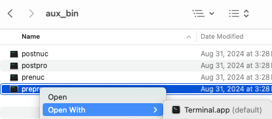

Please send questions and suggestions to cas1@arizona.edu.
SyMAP cannot be improved or problems fixed without user feedback!
Not enough memory
If SyMAP gives an out-of-memory error, you need to increase the memory. The symap script has the following lines:#!/bin/sh mem="8192m"; echo ">>>> SyMAP build, query and view ($mem) `date` <<<<" java -Xmx$mem -classpath /Users/cari/Workspace/github/symap/java/jar/symap.jar symapCE.SyMAPmanager $@Change the number after mem=. The viewSymap script also requests 8192m memory, which you can also edit.
If your machine does not have much memory, you can reduce the amount of memory requested, but beware, you probably will not have enough memory to process large genomes.
For memory issues related to running MUMmer, see MUMmer.
MySQL suggested settings
| Slow to load | Slow queries | Go to top |
SyMAP prints out the values of these three important MySQL variables when a symap database is created. Additionally, if you use ./symap -sql they will be printed.
Slow to load sequence and annotation
Two MySQL settings are especially important for SyMAP performance (and generally for InnoDB table performance).
| innodb_buffer_pool_size | The default is too low for most purposes. You should set this to around 1Gb if possible (note that the units are bytes). |
| innodb_flush_log_at_trx_commit=0 | The default setting is 1, which results in very slow loading of data to the database. |
To check the values, start mysql and type:
show variables like "innodb_buffer_pool_size"; show variables like "innodb_flush_log_at_trx_commit";To change the variables, then type:
set global innodb_buffer_pool_size=1073741824; set global innodb_flush_log_at_trx_commit=0;Alternatively, you can set these in the MySQL configuration file my.cnf and restart MySQL. Note that my.cnf is typically located at /etc/my.cnf, on both Linux and Mac.
Different machines and MySQL installations can produce different results with these variables.
If the SyMAP
Slow queries
| max_allowed_packet | This should be at least 500M if possible (the units are bytes). |
To check the value, start mysql and type:
show variables like "max_allowed_packet";To change this variable, then type:
set global max_allowed_packet=1073741824;
MySQL Problems
| Database connect errors | MariaDB cannot connect | Does not support Innodb tables | Run mysqld as root | Cannot create table (errno: 121) | MySQL indices | Go to top |
Database connect errors
On startup, error messages mentioning the database or SQL probably mean that the database connection could not be established or was lost. A message at startup means SyMAP was not able to connect to the database using the provided information in symap.config. First, make sure your db_adminuser and db_adminpasswd are correct.
These days, the best way to find the MySQL problems is to search the internet. However, the following are some things to check for connection problems on SyMAP startup:
Check the database privileges:
The database users specified in symap.config may not have necessary access to the database.
If you running the read/write
Check the MySQL configuration:
The MySQL configuration file (/etc/my.cnf) should not contain any
of the following lines that prevent remote access to the database.
bind_address=127.0.0.1
skip_networking
Make sure the port is visible: If the database is on a different computer, test that its port 3306 is visible from your computer:
telnet <server address> 3306If it does not make a connection then either the server is not running, or it is set to run on a non-standard port, or the port is blocked by a firewall. Contact a system administrator. (Note, to get out of telnet type "^]".)
If
com.mysql.jdbc.CommunicationsException: Communications link failure due to underlying exception: ** BEGIN NEXTED EXCEPTION **Restart the program as the connection was dropped.
MariaDB cannot connect
If you are using MariaDB (post version 10.4.12) and get the error:Unable to connect to the mysql database on localhost; are username and password correct?Try adding the following lines to the /etc/my.cnf:
[mysqld] character-set-server=utf8mb4And restart MariaDB with systemctl restart mariadb.
Thanks to Lori for this solution!
The database does not support Innodb tables
This can happen in a couple of ways ways. Look in the mysql log for clues.- MySQL started with the "skip-innodb" flag. Solution is to remove this.
- InnoDB log file problems. This can happen if you change the log file size, without deleting the log file. Solution: shut down mysql, remove the innodb log file, and restart mysql.
Run mysqld as root
Please read "Security" section of the MySQL manual to find out how to run mysqld as root.If you are launching SyMAP as the unix root user, which is blocked by MySQL as a security hazard. The solution is simply to use a regular non-root user account.
Cannot create table (errno: 121)
This can occur if you try to create a SyMAP database whose name differs only by case from an existing database, e.g. "symapTest" when "symaptest" already exists.MySQL indices
Most records in MySQL have an index. The Hit# shown in SyMAP (queries and 2d) is one such index. If you have many alignments in the database, this number will get very large. Also, if you add alignments and delete them, the index can keep growing. Solution: once you determine the set of alignments you want, delete the database and just reload what you want for the final database.General
| Hangs on Load | Status window disappeared | Go to top |
Hangs on Load
1. Other apps may cause it to hang, e.g. on Mac, downloaded apps, such as Bartender may interfere with SyMAP, which causes it to hang. When Bartender was removed, SyMAP no longer hung on load.
2. It occasionally hangs for no discernible reason (especially if I have been doing
testing on MacOS, where I remove projects and reload over and over). If this happens, Cntl-C to
stop the program (or kill it some other way). Restart
./symap,
3. If in the middle of a
Status window disappeared
Occasionally the status window disappears when running an alignment. Clicking the top of the project manager sometimes brings it back. Otherwise, just check the output to the terminal, which tells you when it is done.MacOS
| Running external programs | MacOS Fonts | Go to top |
Running external programs
MacOS will run- Using the Finder, go to the
symap_5/ext/mummer/mac/aux_bin directory. - Select
prepro and "Open With" → "Terminal" (see lower right image). - You will get a pop-up, select "Open".
- A terminal window will popup, you can close it.
|  |
{kind=link}
{kind=link}
mummer mgaps show-coords aux_bin/prepro aux_bin/postpro aux_bin/prenuc aux_bin/postnucFor running MUSCLE, perform this on
After that, you should be able to run these via SyMAP, even if you move the
This worked with my previous Catalina, Monterey, and current Sonoma but if it does not work for you, see Apple Help, section "If you want to open an app that has not been notarized or is from an unidentified developer".
MacOS Fonts
If you get the following warning:Warning: the fonts "Times" and "Lucida Bright" are not available for the Java logical font "Serif", which may have unexpected appearance or behavior. Re-enable the "Times" font to remove this warning.It does not hurt anything, but its tiresome. Do the following:
- Download Lucida Bright.zip and Times.zip from LengionFonts.
- Double click to unzip into Times.tff. Double click Times.tff, which brings up the
FontBook , then install. - Do the same for Lucida Bright.zip.
- Note: after OS updates, you may have to install again.
Java Runtime Error
On rare occasions, Java crashes, SyMAP will quit and you will see:# # A fatal error has been detected by the Java Runtime Environment: # # SIGBUS (0xa) at pc=0x000000010a05a58e, pid=70813, tid=89091 etcWhen searching online for this problem, it says: "This fatal error occurs when the Java Virtual Machine (JVM) crashes, typically due to issues in native code (outside the JVM), memory corruption, or hardware instability".
Searching native code, it says: "When a 'fatal error' occurs in native code, it means the crash happened in a non-Java component such as a shared library (.dll, .so), a system driver".
| Go to top |
Email Comments To: cas1@arizona.edu